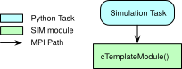

Module RST Documentation
Creating the Documentation Page
Each module has a plain text reStructuredText (RST) file named <moduleName>.rst in its
source folder, alongside its implementation and interface files. The documentation build
places this content before the generated API descriptions. The C Module: cModuleTemplate and
C++ Module: cppModuleTemplate pages are complete examples: they describe the implemented calculation,
message interfaces, reset behavior, and a runnable Python simulation.
Use the following sections when documenting your own module:
Executive Summary: State what the module does and its intended use.
Module Assumptions and Limitations: Explain model assumptions, input requirements, and conditions under which the results are meaningful.
Message Connection Descriptions: Describe every input and output, including units, optional inputs, and the behavior when an optional input is disconnected.
Detailed Module Description: Explain the algorithm and mathematics when needed.
User Guide: Show configuration, message subscriptions, scheduling, and expected results. Explain which values are configuration, which are runtime state, and what initialization and reset do to them.
Replace template descriptions with the behavior of your implementation. In the sample modules, for example, the output is the input vector with an increasing counter added to its first component. Their user guides demonstrate that behavior with executable assertions. When using makeDraftModule, complete the generated section prompts as you implement the algorithm.
The examples below show both RST source and its rendered result. Use unique labels when copying examples into a module so that equations and cross-references remain unambiguous. For folder documentation and integration with the generated API pages, see Using Sphinx to Document Basilisk Modules and Folders.
Message Connections
Use bsk-module-io to generate the diagram and message table together. For example:
.. bsk-module-io:: cModuleTemplate
:caption: Module I/O Messages
:module-type: C
input dataInMsg CModuleTemplateMsgPayload
Optional dimensionless input vector; uses zeros when disconnected.
output dataOutMsg CModuleTemplateMsgPayload
Input vector with the update counter added to its first component.
This renders as:
Msg Variable Name |
Msg Type |
Description |
|---|---|---|
dataInMsg |
Optional dimensionless input vector; uses zeros when disconnected. |
|
dataOutMsg |
Input vector with the update counter added to its first component. |
The message names must match the module members, and payload names link to their definitions.
The documentation build infers the language on module pages; :module-type: supplies it
explicitly here because this is a tutorial page. See Using Sphinx to Document Basilisk Modules and Folders for the directive syntax.
Equations
Use LaTeX to describe the module mathematics. For the template counter, the code:
:math:`c_k = c_{k-1} + 1`
produces the inline equation \(c_k = c_{k-1} + 1\). In contrast, this code:
.. math::
c_k = c_{k-1} + 1
or this compact version for a single line:
.. math:: c_k = c_{k-1} + 1
creates this block of math.
To create a numbered equation you need to add a label:
.. math::
:label: eq-module-rst-counter
c_k = c_{k-1} + 1
which creates this
This label can be referenced using :eq:`eq-module-rst-counter` to cite Eq. (1).
Note that these label names must be unique across all of the Basilisk RST documentation. It is encouraged to use
a module-unique naming scheme.
For bold math with the documentation configuration, use {\bf u} (regular letters) or
\pmb \omega (Greek letters). The following math is an example of this showing both bold and plain letters
next to each other:
More details on how to typeset TeX math in Sphinx can be found here.
If the module description requires extensive math discussion, this can be TeX’d up using the technical note
template inside the _Documentation folder. A link should be included in the HTML documentation to
the Detailed PDF Documentation
using the code:
:download:`Detailed PDF Documentation </../../src/moduleTemplates/cModuleTemplate/_Documentation/Basilisk-MODULENAME.pdf>`
Use a PDF technical note when a derivation is too long for the module page. Keep the assumptions, interfaces, and usage instructions in the Sphinx documentation. Another option is to link to a web site, conference paper, journal paper, book or thesis document that discusses the mathematical developments used.
Citations
If you want to cite other papers or text, provide a web link to a paper. For example:
`The link text <http://example.net/>`__
creates The link text.
Images and Figures
Store static images and figures in the module’s _Documentation/Images/ folder, using
web-compatible formats such as SVG, JPG, or PNG. The examples below use an existing image
from cModuleTemplate/_Documentation/Images/. The SVG image format
scales without losing detail. Check that figures remain legible in both the light and dark
documentation themes.
For example, to include an image (has no caption) you can use code such as:
.. image:: /../../src/moduleTemplates/cModuleTemplate/_Documentation/Images/fig1.svg
:align: center
to generate the following image.

Note that with pixelated images such as jpg and png format save the file at twice the resolution
that you need, then provide :scale: 50 % to shrink it to the normal size. This way the image has
enough resolution to look good on high-resolution displays.
To include a figure with a caption and a reference label, use the following code:
.. _fig-module-rst-example:
.. figure:: /../../src/moduleTemplates/cModuleTemplate/_Documentation/Images/fig1.svg
:align: center
Example illustration for module documentation.
This yields
Example illustration for module documentation.
You can cite the figure using :ref:`fig-module-rst-example`. For example, as seen in Example illustration for module documentation., the figure can
now be referenced.
More information on how to include images or figures using Sphinx can be found here. In particular, it is also possible to include an image as a figure which has a caption.
Tables
The standard Sphinx table formatting can be used to generate tables. More information on Sphinx table formatting can be found here. For example, the code:
.. table:: Example Grid Table
+------------------------+------------+----------+----------+
| Header row, column 1 | Header 2 | Header 3 | Header 4 |
| (header rows optional) | | | |
+========================+============+==========+==========+
| body row 1, column 1 | column 2 | column 3 | column 4 |
+------------------------+------------+----------+----------+
| body row 2 | Cells may span columns. |
+------------------------+------------+---------------------+
| body row 3 | Cells may | - Table cells |
+------------------------+ span rows. | - contain |
| body row 4 | | - body elements. |
+------------------------+------------+---------------------+
will generate the following table:
Header row, column 1 (header rows optional) |
Header 2 |
Header 3 |
Header 4 |
|---|---|---|---|
body row 1, column 1 |
column 2 |
column 3 |
column 4 |
body row 2 |
Cells may span columns. |
||
body row 3 |
Cells may span rows. |
|
|
body row 4 |
|||
Note
Keep column borders aligned when editing a grid table.
The list-table command is nice in that it allows for a simple table to be created where the table
structure does not have to be drawn with ASCII vertical and horizontal lines. However, the formatting options
are more limited than with the above method. See
documentation for more info.
For example, the code:
.. list-table:: List Based Table Title
:widths: auto
:header-rows: 1
* - Header 1
- Header 2
- Header 3
* - Label 1
- text
- more text
* - Label 2
- text
-
* - Label 3
- text
- some more text
will produce this table:
Header 1 |
Header 2 |
Header 3 |
|---|---|---|
Label 1 |
text |
more text |
Label 2 |
text |
|
Label 3 |
text |
some more text |
Admonitions
With Sphinx you can easily create HTML highlight blocks called admonitions such as
attention, caution, danger, error, hint, important, note, tip, and
warning. For example:
.. note::
Reset clears the runtime counter and preserves the sample configuration.
Note
Reset clears the runtime counter and preserves the sample configuration.
The following samples show the other block styles:
Danger
text goes here
Error
text goes here
Attention
text goes here
Caution
text goes here
Warning
text goes here
Hint
text goes here
Important
text goes here
Tip
text goes here
Code Blocks
Show executable Python configuration and usage with code-block. For example:
.. code-block:: python
:linenos:
from Basilisk.moduleTemplates import cModuleTemplate
module = cModuleTemplate.cModuleTemplate()
module.sampleConfigVector = [1.0, 2.0, 3.0] # [-]
This produces:
1from Basilisk.moduleTemplates import cModuleTemplate
2
3module = cModuleTemplate.cModuleTemplate()
4module.sampleConfigVector = [1.0, 2.0, 3.0] # [-]
Use the complete simulation examples in C Module: cModuleTemplate and C++ Module: cppModuleTemplate as patterns for a user guide. Include required imports, configuration, input messages, and expected results so readers can run the example with a built Basilisk installation. For additional options, see the Sphinx code-block documentation.
Testing the Documentation
Run the Python examples against a built Basilisk installation and check their expected outputs. Build the HTML documentation and inspect the equations, figures, tables, code blocks, and links. See Creating the HTML Basilisk Documentation using Sphinx/Doxygen for the normal build command and single-page preview workflow. A full documentation build checks cross-page references and navigation that a single-page preview cannot resolve.